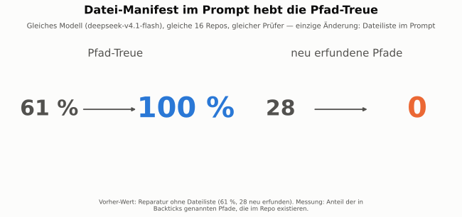
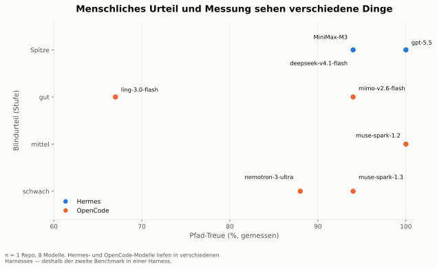

Die Frage
Zwei Messungen, weil eine nicht reicht
Maschinell lässt sich fragen: existieren die Pfade, die das Modell in Backticks nennt? Diese Frage ist billig, eindeutig und täuscht sich nicht. Sie sagt aber nichts darüber, ob sich das README gut liest. Die zweite Frage ist die teurere — und die einzige, die die Autoren der READMEs selbst beantworten können: Liest sich das für einen Fremden gut?
Der Aufbau hält beides auseinander. Die Maschine misst, ohne zu raten. Der Mensch urteilt, ohne zu wissen, welches Modell geliefert hat. Erst wenn beide Urteile vorliegen, wird aufgedeckt.
Was „blind“ hier heißt
Die vorgelegten READMEs trugen nur einen Buchstaben: A, B, C … Kein Modellname, kein Harness, kein Repo. Auch der Messerator kannte nur Buchstaben, nicht das Modell. Erst nach dem Urteil wurde die Zuordnung geöffnet — sonst bewertet man die Marke statt der Arbeit.
Dass das trägt, zeigt eine Beobachtung: Die Blind-Prognosen „das ist deepseek“ lagen zweimal daneben — der Bewerter erkannte das Modell nicht am Stil.
Hauptergebnis · Benchmark 2
Höchste Treue ist nicht automatisch das beste Urteil
Zwei Repos, acht Modelle, eine Harness. Waagerecht die gemessene Pfad-Treue, senkrecht das blinde Urteil in vier Stufen. Blau: kostenlos. Orange: Abo. Die beiden Achsen erzählen nicht dieselbe Geschichte.
hai-mcp: 100 % Treue, Urteil „gut“
gpt-5.5 hat die perfekte Treue und das zweitbeste Urteil der Runde. muse-spark-1.3 liegt 20 Prozent darunter und landet trotzdem in der Spitzengruppe.
sidecar-ng: 100 % Treue, Urteil von „mittel“ bis „Spitze“
Sechs Modelle mit 100 % Treue, Urteile von „mittel“ bis „Spitze“. ling-3.0 verliert, weil es die Aufgabe verfehlt — nicht, weil es lügt.
| Modell | hai-mcp | Sidecar-ng | Kostet |
|---|---|---|---|
| muse-spark-1.2 (free) | Spitze / 82 % / 379 | Spitze / 100 % / 157 | 0 $ |
| deepseek-v4.1-flash | Spitze* / 81 % / 366 | gut / 100 % / 131 | OpenCode-Go-Abo |
| muse-spark-1.3 (free) | Spitze / 80 % / 348 | gut / 100 % / 72 | 0 $ |
| gpt-5.5 | gut / 100 % / 81 | gut / 100 % / 60 | Codex-Abo |
| mimo-v2.6-flash (free) | schwach (zu lang) / 83 % / 373 | gut / 100 % / 132 | 0 $ |
| ling-3.0-flash (free) | gut / 79 % / 360 | schwach (Aufgabe verfehlt)* / 73 % / 66 | 0 $ |
| nemotron-3-ultra (free) | schwach / 85 % / 188 | mittel / 67 % / 125 | 0 $ |
| nemotron-3.5-lightning (free) | – (nichts geändert) | mittel / 100 % / 69 | 0 $ |
| MiniMax-M3 | ausgeschlossen (401) | ausgeschlossen | – |
* Der Buchstabe wurde im Transkript nicht gesprochen; die Zuordnung folgt aus der Reihenfolge. Beim Pfad-Treue-Wert für hai-mcp sind die 26 fehlenden Pfade zu 5 Laufzeit-Artefakten und Platzhaltern zurückzurechnen — Original-README 74 %, über alle acht Einträge genau ein neu erfundener Pfad.
Blind-Galerie
Swipe durch die READMEs, dann aufdecken
Jede Karte ist genau das, was der Bewerter zuerst sah: ein Buchstabe. Wischen, blättern oder die Pfeiltasten benutzen — erst wenn du dir ein Urteil gebildet hast, legst du die Karte um.
Vier Lektionen
Was davon bleibt, wenn man die Zahlen wegnimmt
Die Dateiliste schlägt die Modellwahl
Ein Modell, 16 zurückgehaltene READMEs. Nur eine Änderung am Auftrag: die Dateiliste kam mit in den Prompt, dazu die Regel, jeder Pfad muss darin stehen. Zwei Änderungen gebündelt — der Effekt ist trotzdem größer als der Abstand zwischen den Modellen.
61 % → 100 %Blindurteil und Messung sind zwei Sachen
Wer 100 % Treue hat, schreibt nicht automatisch das beste README. Wer 80 % hat, schon. Aus beiden Messungen zusammen bekommt man eine Empfehlung; aus einer allein nur eine Zahl.
2 Messungen, 1 UrteilDie Harness verzerrt den Vergleich
Im ersten Lauf teilte sich die Szene in bezahlte Modelle in einer Harness und Gratis-Modelle in einer anderen. Ob ein Modell gut ist, wusste man so nicht. Mit einer Harness für alle lag der Sieger woanders als vorher.
1 statt 2 HarnessesEin Agent ist kein Secret-Scanner
21 Repos, ein Agent prüft auf Geheimnisse, parallel gitleaks über die ganze Historie. Neunmal sagte der Agent „veröffentlichen“, obwohl der Scanner Funde hatte — darunter ein Repo mit echten Access-Tokens und eines mit über 1.000 Treffern.
9 FehlurteileBelege zu Lektion 01 und 02

Belege zu Lektion 03 und 04

Empfehlung
Was ich daraus bauen würde
Der teuerste und der stärkste Weg fällt hier zusammen: das beste Modell im Test war kostenlos, und der Zuverlässigkeitsgewinn kommt aus einem Skript. Der Agent darf raten — entscheiden darf er nicht.
Schreibt die README. Kostenlos, in beiden Testrepos das beste Urteil. Bekommt die Dateiliste mit — ohne sie ist es ein anderes Modell.
Geht deterministisch jeden genannten Pfad nach. Findet Fehler, meldet die Liste. Ein LLM prüft hier nichts — das ist der ganze Punkt.
Springt nur ein, wenn der Prüfer Fehler findet oder das Modell gar nichts liefert. Abo kostet nur die Ausnahmen, nicht die Fläche.
Ehrliche Grenzen
Wofür diese Zahlen nicht reichen
- n = 2 Repos, 1 Bewerter. Eine Tendenz, kein Gesetz. Ein drittes Repo kann die Reihenfolge ändern.
- MiniMax-M3 fehlt. Der Zugangs-Key lieferte 401. Das ist ein Zugangs- und kein Modellbefund — im ersten Test über einen anderen Provider war MiniMax in der Spitzengruppe.
- Der Prüfer kennt keine Platzhalter. Pfade wie <project>/… oder Laufzeit-Artefakte zählen als erfunden. Das Original-README von hai-mcp kommt deshalb selbst nur auf 74 %.
- Die Dateiliste hatte eine Nebenwirkung. In einem Repo mit eingebettetem Git-Repository löschte das Modell 20 echte Pfade, weil git ls-files sie nicht zeigt. Fix: Manifest-Skript, das eingebettete Repos auflöst.
- Die Auswahl der ersten 5 Repos war nicht neutral — sie begünstigte das teuerste Modell. Die spätere Auswahl ist dokumentationsreifer, aber ebenfalls klein.
- Die Metrik prüft Existenz, nicht Bedeutung. Ob eine Beschreibung stimmt, misst sie nicht. Genau dafür gibt es das blinde Urteil.